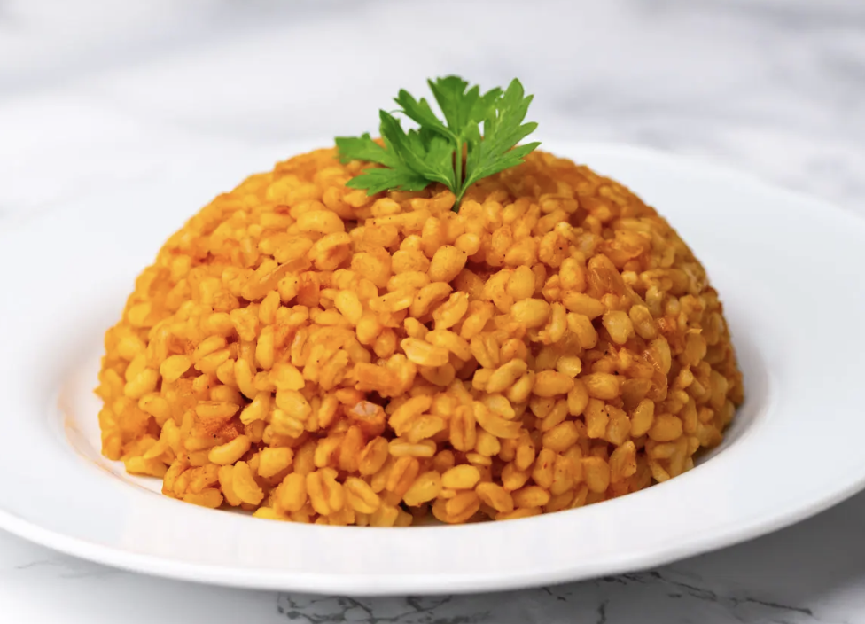
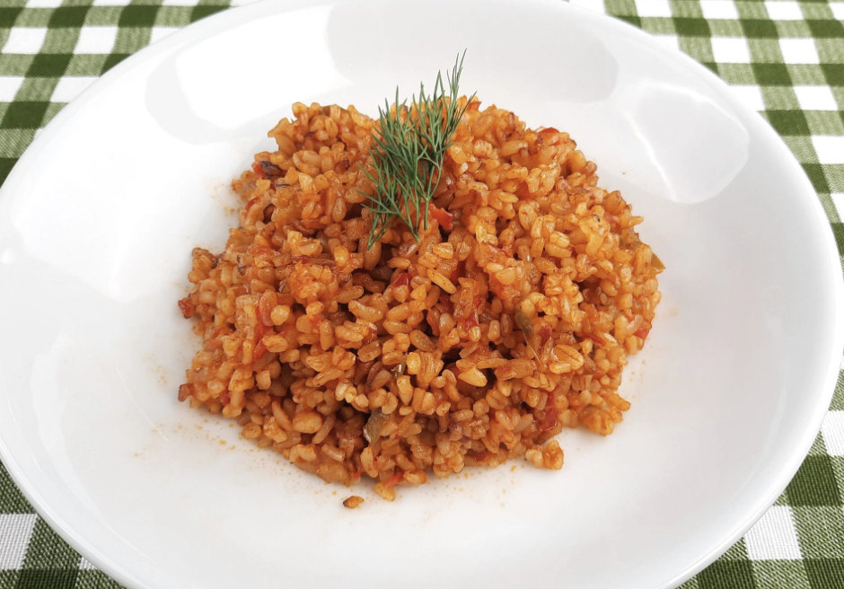

bulgur pilavı TARİFİ


bulgur pilavı Tarifi İçin Malzemeler
- 1, 5 su bardağı bulgur
- 3,5 su bardağı sıcak su
- Yarım yemek kaşığı biber salçası
- 1 yemek kaşığı domates salçası
- 1 tavuk bulyon (isteğe bağlı koymayabilirsiniz)
- 2 yemek kasığı tereyağı
- 3 yemek kaşığı sıvı yağ
- Tuz
yapılışı:
- Tereyağı ve sıvı yağ tencereye alınır.
- Tereyağı eriyince salçalar koyulur, karıştırılır ve güzelce kavrulur.
- Üzerine yıkanmış pilavlık bulgur koyulur, karıştırılır.
- Tuz ve tercihe göre bulyon eklenir. Eğer hazırda tavuk ya da et suyunuz varsa onunla da yapabilirsiniz, daha lezzetli olur benim yoktu bulyon eritip kullandım.
- Sonra sıcak suyu eklenir ve pişirilir. (tavuk suyu varsa su miktarını ona göre ayarlayın)
- Pilavınızın altını kapattıktan sonra üzerine kağıt havlu örterek 10 dakika kadar demlenmeye bırakalım. Afiyet olsun.